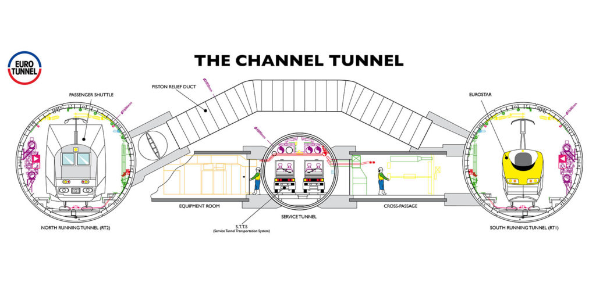

The Eurotunnel, stretching 50 km, is a remarkable engineering feat with three tunnels for trains and services.
Built over six years, it faced challenges like water and air pressures, overcome by tunnel boring machines and concrete lining.
Laser surveying tech ensured a perfect connection between the French and English sides. The impact?
More people using the tunnel means increased tourism, boosted trade, and economic growth for the UK and France.
Le Shuttle, a speedy car passage, adds to the benefits by enhancing trade and creating job opportunities.
In a nutshell, the Eurotunnel is a symbol of human ingenuity, turning challenges into opportunities with significant economic and social rewards.
Introduction
The English Channel tunnel also known as the Eurotunnel is the world’s longest underground tunnel.
It is 50 km (31 miles) long, consisting of three tunnels: two for rail traffic and a central tunnel
for services and security.
In figure 1 you’ll be able to see the cross sections of the tunnel and the three tunnel design.
The Eurotunnel construction project started in 1988 and it took the French and English engineers 6 years to finish it off for a grand opening on 6th May 1994.
There were positives and negatives in the process of this construction due to it being such a prestige and world changing Project.
Although it cost the Governments billions of pounds the ‘Eurotunnel carries nearly 10 million passengers a
year between France and the UK via its LeShuttle and LeShuttle Freight passenger and freight rail shuttle services.
It is also now the fastest, most reliable, simplest and most sustainable way to cross the English Channel.'
Analysis and discussion
Building the Euro tunnel wasn’t easy; it faced many difficulties - these being water and air pressures,
digging into the Earth at the right spots and not causing earthquakes (which could be significant since it is underwater).
To first tackle the digging problem, engineers determined ‘that although the bottom was made of a thick layer of chalk,
the lower chalk, made of chalk marl would be easiest to bore through’ (Rosenberg, 2019).
Firstly, they drilled through the ground using huge tunnel boring machines also known as TBM’s.
While the TBM’s were digging up the chalk and making the foundations of the tunnel,
the engineers and designers found that they were able to overcome another difficulty that they had initially faced -
this being the water and air pressure.
They did this by lining the sides of the tunnels with concrete.
This concrete lining was used to withstand the intense pressure that was coming from above,
whilst also acting as a waterproof coating for the tunnels, meaning that no water was going to leak through.
This was crucial because it meant that the project could continue swiftly.
Another vital issue that the engineers faced was the connection of the two tunnels from the French side and the English side.
Everyone had known that it was going to be a real difficulty task. The way they done it was by using laser – based surveying equipment.
‘The 3D laser scanning process uses the latest high- definition laser scanner to capture precise geometric data within
the built environment in both exterior and interior.
This forms a point cloud which can then be turned into a 3D model’ (Johnson, 2022).
This process was so important because it meant that the main foundation of the tunnel was finally completed.
With fixing this problem the engineers now could install ventilation into the tunnel meaning that it was easier to work in such awful conditions
because being more than 50 meters down underground it can get stuffy, hot and very hard to breathe.
The English Channel tunnel has had a lot of benefits since it was fully built and opened.
Firstly, the increase in passengers using the English Channel tunnel.
Before the tunnel opened the only mode of transport for people to cross the English Channel was by either by air,
via planes or by sea via ferry’s, boats and cruise ships.
But after the opening of the tunnel the number of passengers that stared to use the tunnel over the years increased a lot.
On the table below we can see that in 1994 when the tunnel opened there was only about 600 thousand passengers who used the tunnel for mode of transport,
but then after 10 years we can see that in 2003 the number of total actual passengers using the tunnel was 29 million passengers.
Meaning that the number rose by 28.5 million passengers using the tunnel and that number today has also increased.
This is such a big benefit to the UK and France because it meant that there’s
more tourism resulting in the economy increasing due to more money coming in and out of both countries.
The fact that the English Channel tunnel not only has train tracks for the Eurostar,
it also had le shuttle which was a way cars could get through the tunnel quickly.
This was another big benefit because It meant the UK had an easy-access connection with Europe for trading.
This also generated more revenue in the economy because it meant trading goods were being transported a lot quicker.
‘Each shuttle of the Le shuttle has a locomotive at each end and travels at 140km/h and the normal crossing time is 35 minutes’ (Grant, 1997).
This also benefited the employment section as more people were able get jobs whether it was being a drunk driver transporting goods,
a railway service worker or operating and overseeing the entire channel tunnel systems.
Actual Channel Tunnel Passengers, 1994-2003 (millions of passengers)
Year
1994
1995
1996
1997
1998
1999
2000
2001
2002
2003
Eurostar Passengers
0.1
2.7
4.9
6.0
6.3
6.6
7.1
6.6
6.6
6.3
Le Shuttle Passengers
0.2
4.4
7.9
8.6
12.1
11.0
9.9
9.4
8.6
8.6
CT Passengers
0.3
7.1
12.8
14.7
18.4
17.6
17.0
16.3
15.3
14.7
Table 6

Figure 1
References
Anguera, R., 2006. The Channel Tunnel—an ex post economic evaluation.
Available at: Anguera, R. (2006). The Channel Tunnel—an ex post economic evaluation.
Transportation Research Part A: Policy and Practice,40(4), pp.291–315. doi:https://doi.org/10.1016/j.tra.2005.08.009.
Accessed 5 November 2023.
getlinkgroup, 2023. Eurotunnel, a key player in low-carbon transport and high-speed rail between the UK and France.
Available at: https://www.getlinkgroup.com/en/our-group/eurotunnel/#:~:text=As%20the%20operator%20of%20the,and%20freight%20rail%20shuttle%20services.
Accessed 13 November 2023.
Grant, M., 1997. Financing Eurotunnel.
Available at: https://www.ejrcf.or.jp/jrtr/jrtr11/pdf/f46_gra.pdf
Accessed 5 November 2023.
Hub, G. I., 2020. The Channel Tunnel.
Available at: https://cdn.gihub.org/umbraco/media/4828/the-channel-tunnel_case-study_pdf_updated-141022.pdf
Accessed 13 Novemeber 2023.
Johnson, M., 2022. What is a 3D laser survey?.
Available at: https://cadsonline.com/videos/survey/what-is-a-laser-survey/#:~:text=A%20laser%20scanning%20survey%20is
Accessed 5 November 2023.
Rosenberg, J., 2019. How the Channel Tunnel Was Built and Designed.
Available at: https://www.thoughtco.com/the-channel-tunnel-1779429
Accessed 5 November 2023.